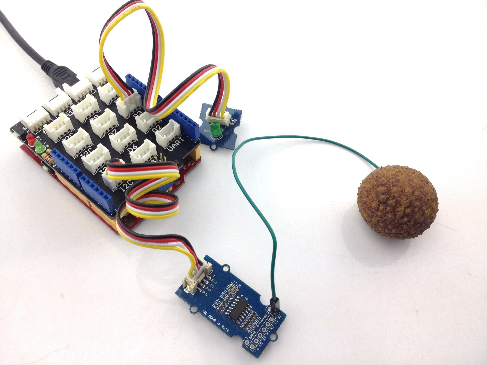
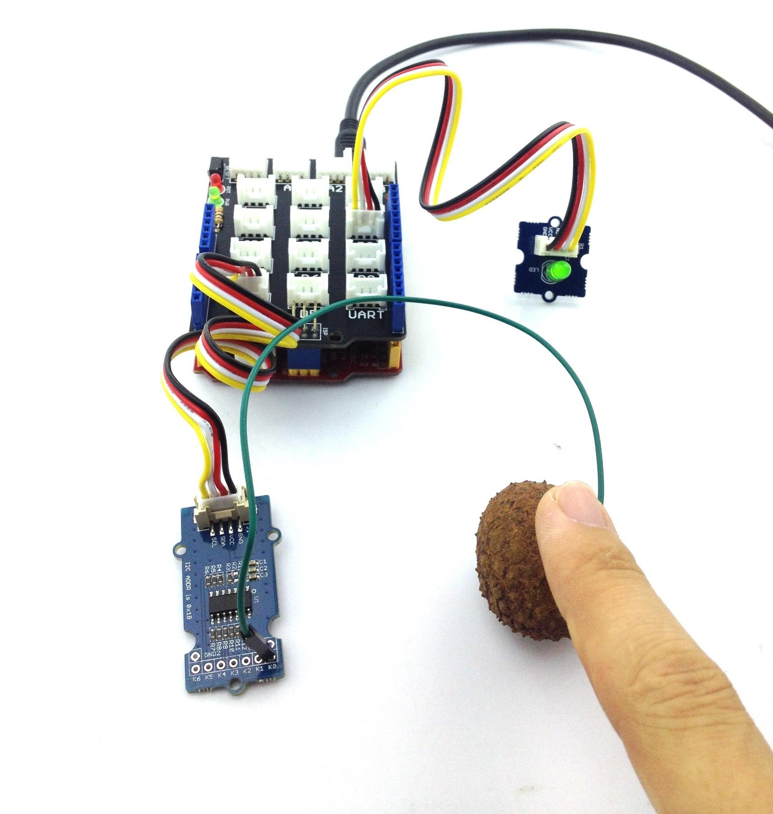
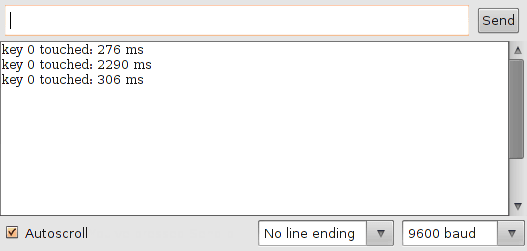
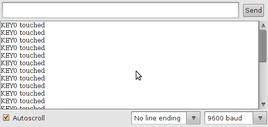

Grove - Q Touch Sensor
The Q Touch Sensor is a high sensitivity and high noise immunity touch input device. It is based on Atmel AT42QT1070.
The AT42QT1070 modulates its bursts in a spread-spectrum fashion in order to heavily suppress the effects of external noise, and to suppress RF emissions. The QT1070 uses a dual-pulse method of acquisition. This provides greater noise immunity and eliminates the need for external sampling capacitors, allowing touch sensing using a single pin.
Specification
- Operating Voltage: 3 ~ 5.5V
- Operating Current @3.3V: 1mA
- Touch Keys: 7 Keys ; key0, key1, key2 are on the Grove PCB bottom side
- Communicating Protocol: I2C
- I2C Address: 0x1B
Interface Function
- ①：On board touch key0
- ②：On board touch key1
- ③：On board touch key2
- ④：Touch key0 ~ key6 break out
- The recommended range for key capacitance Cx is 1 pF – 30 pF. Larger values of Cx will give reduced sensitivity.
Usage
Demo: Who touched my lychee?
Have you ever heard of a lychee? Yes, it's a very famous fruit of south of China. If you have ever tasted, will love it.
Now let's begin our demo. When you touch the hit pan (lychee),the LED will turn on.
Hardware Connections
- 1. Connect the I2C of Grove-Q Touch Sensor to the I2C socket on the Grove Base Shield.
- 2. Connect the Grove-LED to D3 (Digital Pin 3) on the Grove Base Shield.
- 3. Connect Key0 (marked K0) on the Grove-Q Touch sensor to a Lychee (Alternatively, you could touch the open end of the cable with a finger while testing).

Software Part
- 1) Download the library [Q Touch Library];
- 2) Unzip it into the libraries folder of Arduino IDE, for example the path could be ..\arduino-1.0.5\libraries.
Example 1
- a) Open the example via Arduino Menu 'File -> Examples -> Seeed_QTouch-master -> Grove_QTouch_demoCode_v_1_0'.
- b) Upload the code. Note that you should select the correct board type and COM port.
- c) On touching the Lychee, the LED would glow, as can be seen below.

Example 2
- a) Open the example via Arduino Menu 'File -> Examples -> Seeed_QTouch-master -> isTouch'.
- b) Upload the code.
- c) Open the Serial Monitor.
- d) Touch and release the Lychee; The Serial Monitor would display the duration of touch as in the screenshot below.

You can try the below Codebender widget to upload the code as well.
Please open the below Serial monitor to view data.
Example 3
- a) Open the example via Arduino Menu 'File -> Examples -> Seeed_QTouch-master -> getTouchNumber'.
- b) Upload the code.
- c) Open the Serial Monitor.
- d) On touching the Lychee, the Serial Monitor would display the Key that is connected, as in the screenshot below. One can connect the fruit to any other Key and verify.

You can try the below Codebender widget to upload the code as well.
Please open the below Serial monitor to view data.
Resource
Copyright (c) 2008-2016 Seeed Development Limited (
www.seeedstudio.com /
www.seeed.cc)
This static html page was created from http://www.seeedstudio.com/wiki